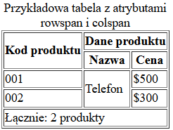

Tabele HTML

Tabele są potrzebnym elementem HTMl, do tworzenia formularzy czy układów danych elementów na stronie.
- Potrzebne znaczniki
- Jak stworzyć prostą tabele
- Jak stworzyć tabele zagnieżdżone w html
- Nietypowe układy tabel
Spis treści
Potrzebne znaczniki
Znaczniki jakie są potrzebne do tworzenia tabel w HTML to:
1.<table>
2.<caption>
3. <thead>
4. <tbody>
5. <tfoot>
6. <tr>
7. <th>
8. <td>
<table>: Definiuje samą tabelę.
<caption>: Opcjonalny tag, który definiuje tytuł lub opis tabeli.
<thead>: Grupa wierszy definiujących nagłówki tabeli.
<tbody>: Grupa wierszy definiujących główne dane tabeli.
<tfoot>: Grupa wierszy definiujących stopkę tabeli.
<tr>: Definiuje wiersz tabeli.
<th>: Definiuje nagłówek komórki tabeli (najczęściej używane w pierwszym wierszu lub w pierwszej kolumnie).
<td>: Definiuje komórkę danych tabeli.
Jak stworzyć prostą tabelę
<table border="1">
<caption>Przykładowa tabela</caption>
<thead>
<tr>
<th>Imię</th>
<th>Nazwisko</th>
<th>Wiek</th>
</tr>
</thead>
<tbody>
<tr>
<td>Jan</td>
<td>Kowalski</td>
<td>30</td>
</tr>
<tr>
<td>Anna</td>
<td>Nowak</td>
<td>28</td>
</tr>
</tbody>
</table>
Aby tabela się wyświetliła używamy atrybutu border="1" w znaczniku table. W tym przykładzie tabela zawiera trzy kolumny (Imię, Nazwisko, Wiek) i dwie wiersze z danymi. Pierwszy wiersz jest wierszem nagłówka. A kolejne dwa ciałem tabeli.
A oto efekt:
Jak stworzyć tabele zagnieżdżone w html
<td>
<table border="1">
<thead>
<tr>
<th>Kolor</th>
<th>Marka</th>
<th>Rok produkcji</th>
</tr>
</thead>
<tbody>
<tr>
<td>Czerwony</td>
<td>Ford</td>
<td>2018</td>
</tr>
<tr>
<td>Niebieski</td>
<td>Toyota</td>
<td>2020</td>
</tr>
</tbody>
</table>
</td>
Aby wykonać tabelę zagnieżdżoną poprostu umieszczamy kolejną tabele w jednej z komórek pierwszej tabeli.
Efekt:
Nietypowe układy tabel
Komórki w tabelach mogą przyjmować różne formy, w tej części artykułu dowiesz się jak używać atrybutów rowspan i colspan. Oto przykładowa tabela z tymi atrybutami:
<table border="1">
<caption>Przykładowa tabela z atrybutami rowspan i colspan</caption>
<thead>
<tr>
<th rowspan="2">Kod produktu</th>
<th colspan="2">Dane produktu</th>
</tr>
<tr>
<th>Nazwa</th>
<th>Cena</th>
</tr>
</thead>
<tbody>
<tr>
<td>001</td>
<td rowspan="2">Telefon</td>
<td>$500</td>
</tr>
<tr>
<td>002</td>
<td>$300</td>
</tr>
<tr>
<td colspan="3">Łącznie: 2 produkty</td>
</tr>
</tbody>
</table>Oto efekt:
W tej tabeli użyliśmy atrybutów "rowspan" i "colspan", aby rozciągnać wybrane komórki na daną szerokość. Atrybut rowspan określa na szerokość ilu kolumn komórka będzie rozciągnięta. A atrybut colspan określa na jaką ilość wierszy komórka będzie rozciągnięta.